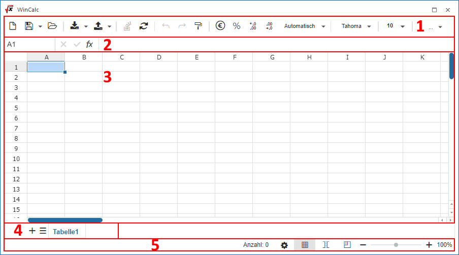

Das WinCalc kann im WinLine INFO über…
1 Business Intelligence
1 WinCalc
… aufgerufen werden. Zusätzlich ist ein Start über die Quick-Info-Leiste des Cockpits möglich.

Das WinCalc ist in die folgenden Bereiche unterteilt:
ü 1 - Menüleiste
ü 2 - Bearbeitungsleiste
ü 3 - CalcSheet
ü 4 - Tabellenblatt
ü 5 - Ansicht
Neben diesen direkt sichtbaren Punkten stehen zusätzlich noch folgende Punkte zur Verfügung:
Die Bedienung als solches erfolgt mit Hilfe von Maus und Tastatur. Hierbei stehen diverse Funktionstasten und Kurzcodes zur Verfügung.